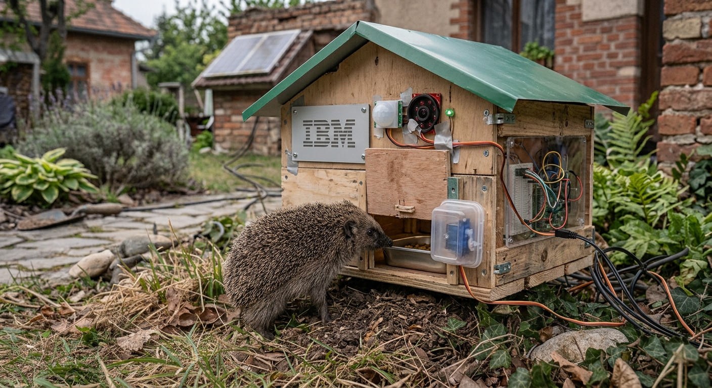

Smart Hedgehog Feeder & Wildlife Monitoring System
Team (Students):
Zakhar Fesiuk
Denys Herych
Bohdan Hnidets
Tomáš Šafranko
Jozef Tirdil
Mentors:
Róbert Barsa – robert.barsa@sk.ibm.com
Katarína Šipošová – Katarina.Siposova1@ibm.com
Viktor Ruska – viktor.ruska@sk.ibm.com
Sergej Chodarev (TUKE) – sergej.chodarev@tuke.sk
Project Idea
A wildlife monitoring system and smart feeder that recognizes which animal is visiting and gives food only to hedgehogs.
Goal: Build a Raspberry Pi prototype combining a camera, an AI detection model, a cloud dashboard and a motorized door.

Two Phases, Two MVPs
- Phase 1 (Weeks 1–4): Wildlife Detection & Dashboard – MVP 1
- Phase 2 (Weeks 5–9): Smart Feeder – MVP 2
Phase 1
Wildlife Detection & Dashboard (MVP 1)
Week 1 – AI Detection Prototype
- Find night-vision footage featuring hedgehogs, rats and cats.
- Select a pretrained computer vision model and test species recognition.
- Build a Python script to process images and videos.
- Display predicted species and confidence scores.
Deliverable: AI prototype tested on prerecorded night-vision footage.
Week 2 – Raspberry Pi & Camera Setup
- Install the required software on the Raspberry Pi.
- Connect the camera and verify image capture.
- Run the detection script on the Raspberry Pi.
- Test using prerecorded wildlife videos displayed on a monitor in front of the camera.
Deliverable: Working camera and AI detection on the Raspberry Pi.
Week 3 – Cloud Dashboard
- Set up Adafruit IO and create data feeds.
- Send detection events from the Raspberry Pi using Python and MQTT or HTTP.
- Create a dashboard showing species detections, timestamps, confidence scores and visit counts.
Deliverable: MVP 1 – wildlife detection with a cloud dashboard.
Week 4 – Detection Testing
- Test using available wildlife footage and, if safe and feasible, live observations.
- Evaluate detection performance and document limitations.
Deliverable: Initial detection test results.
Phase 2
Smart Feeder (MVP 2)
Weeks 5–6 – Feeder Construction & Door Mechanism
- Construct the feeder enclosure.
- Install a servo motor and build the motorized door.
- Connect the Raspberry Pi, camera, motion sensor and servo motor.
- Develop and test the door-control software.
- Consider light or sound deterrents as optional alternatives for discouraging unwanted animals.
Deliverable: Feeder prototype with a working motorized door and connected hardware.
Weeks 7–8 – Hardware & Software Integration
- Connect the AI detection system to the door-control logic.
- Allow access for sufficiently confident hedgehog detections while keeping the door closed for other or uncertain predictions.
- Integrate the feeder with MVP 1 and the Adafruit IO dashboard.
- Display detection events, timestamps and door status.
- Test the complete system and troubleshoot integration issues.
- Verify that local detection and door control work without an internet connection.
Deliverable: Fully integrated smart feeder with AI detection, automated door control and cloud monitoring.
Week 9 – Final Testing & Presentation
- Test the complete system using prerecorded footage and available live wildlife footage.
- Evaluate detection accuracy, door operation and dashboard reliability.
- Document limitations and possible improvements.
- Demonstrate the prototype and present the project results.
Deliverable: Final MVP 2 demonstration and project report.
Important Considerations
- Ensure the door cannot trap or injure an animal.
- Evaluate optional light or sound deterrents for effectiveness and wildlife safety.
Feel Free to Innovate
- The plan is a starting point — explore and improve it.
- Share ideas for better detection, smarter door logic or new features.
Technologies & Tools
- Hardware:
- Raspberry Pi – at least a Zero 2 W (higher-end versions recommended for AI features)
- Raspberry Pi camera – AI version (day only) or NoIR (recommended; enables night vision with IR LED)
- IR LED (infrared LED) – for night vision
- Standard colored LEDs – hardware feedback
- Active buzzer – to deter non-hedgehog animals (flashing LEDs or similar methods can also be used)
- Motion sensor, servo motor
- Software: Python, pretrained computer vision model
- Cloud dashboard: Adafruit IO (MQTT or HTTP)
- Version Control: GitLab (KPI GitLab)
- Board: Mural
Creativity in choosing solutions is encouraged.
Team Rhythm
- Sprints: 1 week each
- Meetings: Regular meetings at the end of each sprint
- Agenda:
- Each meeting includes a demo of what was done
- Discuss who implemented which features, decide what to do next
Set a day when to meet